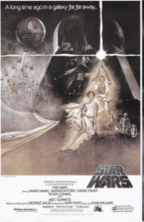
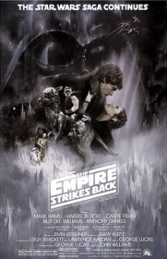
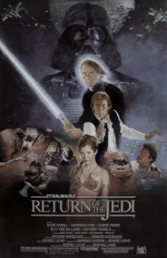

The Original Trilogy
(WARNING: Major spoilers if you haven't yet experienced the amazingness)
A New Hope
This film introduces the characters of Luke Skywalker and Princess Leia, as well as the iron fisted regime of the Galactic Empire. On Tatooine, Luke's home planet, the exiled Jedi Obi-Wan Kenobi, in the guise of a kindly old hermit named Ben Kenobi, watches over him. When Luke realizes his Jedi potential, he teams with Han Solo, joins the Rebels, destroys the Death Star and rescues Leia from Darth Vader. However, Obi-Wan dies in combat with Darth Vader.
The Empire Strikes Back
After the Alliance experiences a devastating defeat at the hands of the Empire on Hoth, Luke Skywalker goes to receive training from the Jedi Master Yoda. However when Princess Leia and Han Solo are captured by the Empire on Bespin, Luke attempts a rescue only to be confronted by Darth Vader. His battle with the Dark Lord ends in Luke's defeat, and he receives the horrifying revelation that Darth Vader is in fact the former Anakin Skywalker, his father. Leia manages to break free with the help of Han's old friend; Lando Calrissian; but Han is himself taken away
Return of The Jedi
After rescuing Han Solo from the gang lord Jabba the Hutt, Luke visits a dying Yoda, who confirms Vader's revelation and reveals that there is another surviving Skywalker before expiring. Obi-Wan Kenobi's spirit appears and elaborates, and Luke deduces that his sister is in fact Leia. While the Alliance engages the Empire in a battle against the second Death Star above Endor, Luke confronts Vader and the Emperor Sheev Palpatine; the Sith mastermind who engineered the creation of the Galactic Empire and the fall of Anakin Skywalker. After a brutal duel with Luke, in which he is defeated and shown mercy, Vader shakes off the Dark Side of the Force and becomes Anakin Skywalker again, destroying Palpatine and saving Luke's life at the cost of his own. With the destruction of the Death Star and the death of Palpatine, the Empire is defeated and as the rebels celebrate, Luke looks on at the smiling spirits of Obi-Wan, Yoda, and his father.